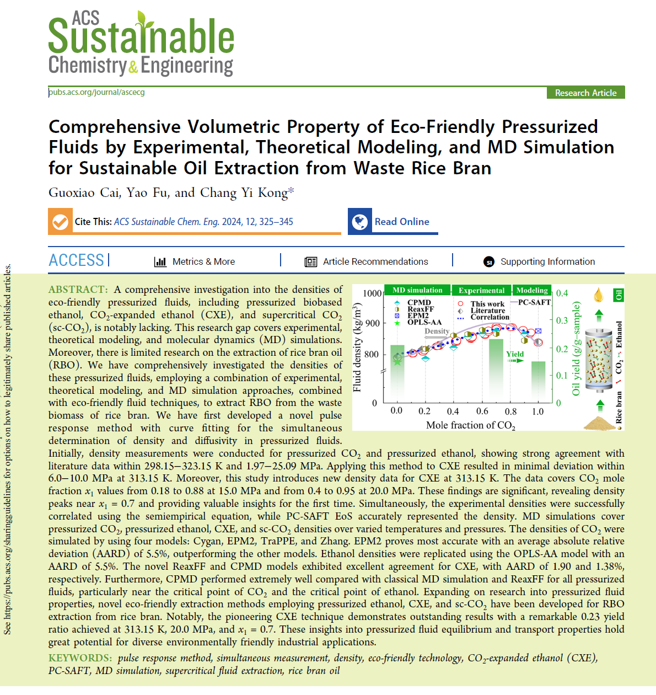
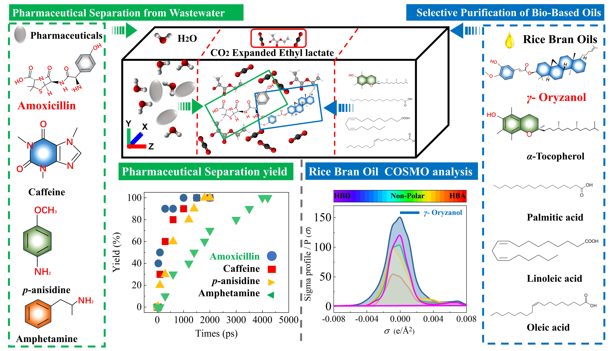

Welcome to the world of 采 国孝
Ph.D. candidate in Environmental System Engineering, expected to graduate from National Shizuoka University, Japan, in March 2025.
Focus on the fundamental properties of supercritical fluids and their application in biomass conversion, with my doctoral dissertation titled “Research on Fundamental Properties of Fluids and Its Application in Biomass Conversion.” In my studies, I employ advanced computational methods such as molecular dynamic simulation, density functional theory, and equations of state to explore the roles of heterogeneous catalysis, carbon materials, precious metals, and organic solvents in fuel cells and process separation.
– Research Advisors: Prof. Chang Yi KONG, Ph.D.
– Rotary International Scholarship Student.
– Environment Leader Program Sustainable Development Goals (SDG).
Professional Training in Administration, Leadership, Communications, and Project Management.
RESEARCH AREAS
Doctoral Dissertation: “Research on Fundamental Properties of Fluids and its Application of Biomass Conversion"
Research on CO₂ expanded organic liquids, created by mixing liquid solvents with supercritical or liquid CO₂, is a key advancement in green chemistry. By adjusting pressure and temperature, their properties can be fine-tuned for diverse applications. Innovative techniques, such as the pulse response method with curve fitting, along with computational chemistry tools like molecular dynamics (MD) simulations and equations of state (EoS) like the Peng-Robinson (PR-EoS) and Soave-Redlich-Kwong (SRK-EoS) models, are vital for predicting CXL density and analyzing solvent dynamics. Moreover, density functional theory (DFT) enhances our understanding of CO₂-solvent interactions, particularly in bio-based oil extraction, contributing to advancements in fluid mechanics and chemical engineering.
Graduate Dissertation : “Preparation of Ru-Mo bimetallic catalyst and its application of liquid phase hydrogenation to catalyze the conversion of glycerol "
This study focuses on the preparation of Ru-Mo bimetallic catalysts and their application in the liquid-phase hydrogenation of glycerol, a valuable byproduct of biodiesel production. The Ru-Mo catalyst is synthesized using advanced methods that ensure optimal dispersion of the metal components, enhancing catalytic activity. Characterization techniques, such as X-ray diffraction (XRD) and transmission electron microscopy (TEM), confirm the successful synthesis and structural integrity of the catalyst. The Ru-Mo bimetallic catalyst exhibits exceptional activity and selectivity for producing valuable products like 1,3-propanediol from glycerol. By optimizing reaction conditions, this catalyst significantly improves glycerol conversion efficiency. The findings highlight the potential of Ru-Mo bimetallic catalysts in facilitating the sustainable conversion of biomass-derived feedstocks, contributing to advancements in green chemistry and supporting the development of renewable chemical processes.
PUBLICATIONS


PUBLICATIONS
Peer Reviewed Articles in Catalysis Materials:
1. Cai, G., Zhou, S., Hao, F. et al. Carbon Nanotubes Supported Ru–Mo Bimetallic Catalyst and the Performance in Liquid Phase Hydrogenation of Glycerol with Phosphotungstic Acid. Catal Lett 151, 2075–2087 (2021). https://doi.org/10.1007/s10562-020-03448-w
2. Cai G, Xiong W, Zhou S, et al. A multi-functional Ru Mo bimetallic catalyst for ultra-efficient C3 alcohols production from liquid phase hydrogenolysis of glycerol. Chinese Journal of Chemical Engineering, 2022, 51: 199-215. https://doi.org/10.1016/j.cjche.2021.09.013
Peer Reviewed Articles in Supercritical Fluid:
3. Cai G, Katsumata W, Okajima I, et al. Determination of diffusivities of triolein in pressurized liquids and in supercritical CO2. Journal of Molecular Liquids, 2022, 354: 118860.https://doi.org/10.1016/j.molliq.2022.118860
4. Fu Y, Cai G, Funazukuri T, et al. Diffusion coefficients of zirconium (IV) acetylacetonate: Measurements and correlation in both pressurized liquid and supercritical fluid. Journal of Molecular Liquids, 2024, 397: 124149. https://doi.org/10.1016/j.molliq.2024.124149
5. Fu Y, Umemura R, Cai G, et al. The retention factors and partial molar volumes of cycloartenyl ferulate at infinite dilution in supercritical carbon dioxide: Measurements and correlation. Journal of Molecular Liquids, 2024: 125737. https://doi.org/10.1016/j.molliq.2024.125737
Peer Reviewed Articles in Computational Chemistry :
6. Cai G, et al. Comprehensive Volumetric Property of Eco-Friendly Pressurized Fluids by Experimental, Theoretical Modeling, and MD Simulation for Sustainable Oil Extraction from Waste Rice Bran. ACS Sustainable Chemistry & Engineering, 2023, 12(1): 325-345. https://doi.org/10.1021/acssuschemeng.3c05836
Peer Reviewing Articles in Computational Chemistry :
7. Cai G, et al. Fundamental Properties of the Green Solvent CO2 Expanded Ethyl Lactate: Peng-Robinson Equation of State, Molecular Dynamics Simulation, and Density Functional Theory Studies, Journal of Environmental Chemical Engineering, 2024
8. Cai G, et al. Sophisticated and High-Efficiency Separation of Pharmaceuticals in Wastewater and Purification of Biomass Waste Oil Using Bio-based CO2-Expanded Ethyl Lactate: A Molecular Dynamics Simulation Study, Chemical Engineering Journal, 2024
ORAL PRESENTATIONS
1. G. Cai, T. Funazukuri, I. Okajima, T. Sako, Chang Yi Kong, Measurements of the pressurized fluid densities using impulse response technique, (PPD-PPE Meeting) 2023 May Spain
2. G. Cai, Katsumata W., Okajima I., Sako T., Funazukuri T., Kong C. Y., Measurements of diffusion coefficients of lipid in various pressurized fluids with different viscosities, (SCEJ 86th) 2022, Sep. 7-9
3. G. Cai, K. Fukunishi, T. Sako, T. Funazukuri, C. Y. Kong, Determination of the PMV values of OAME in supercritical carbon dioxide, (SCEJ 88th Annual Meeting / ICHES) 2023, Mar. 15-17
4. G. Cai, K. Harasaki, S. Sugiura, T. Sako, T. Funazukuri, C. Y. Kong, Densities of pressurized ethanol by MD simulation, (ICONN Meeting) 2023 Mar. 27-29
5. G. Cai, W. Katsumata, I. Okajima, T. Sako, T. Funazukuri, C. Y. Kong, Measurements of diffusion coefficient for triolein in various pressurized fluids with different viscosities, The 9th International Symposium on Molecular Thermodynamics and Molecular Simulation, (MTMS) 2021, Sep. 7-9
6. G. Cai, Y. Fu,T. Funazukuri, I. Okajima, T. Sako, Chang Yi Kong, Density estimation of CO2 expanded liquids by molecular dynamics simulation. (SCEJ 54th Autumn Meeting) Fukuoka, 2023 Sep.
7. G. Cai, K. Harasaki, S. Sugiura, T. Sako, C. Choji,T. Funazukuri, C. Y. Kong, Densities of pressurized ethanol by MD simulation, ( ISFAR-SU2023 Meeting) 2023, Mar. 1
8. G. Cai, Y. Fu, T. Sako, C. Choji, T. Funazukuri, C. Y. Kong, Densities of pressurized ethanol by MD simulation. (ISFAR-SU2024 Meeting Shizuoka) Mar. 6
9. 采国孝，勝間田亘，岡島いづみ，佐古猛，船造俊孝，孔昌一, Measurements of diffusion coefficients of lipid in various pressurized fluids with different viscosities, (SCEJ 86th Annual Meeting 2021 化学工学会第86年会 (3月20-22日 オンライン)
10. 采国孝，岡島いづみ，佐古猛，船造俊孝，孔昌一，加圧流体中のトリオレインの無限希釈相互拡散係数の実測と相関，(SCEJ 87th Annual Meeting 2021 化学工学会第87年会3月16-18日 オンライン)